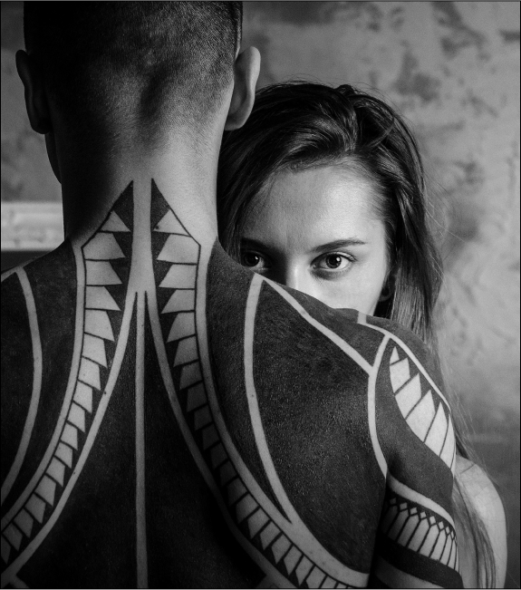

Jessica's Bio
Jessica started drawing at the age of four and has always loved art. She admired her grandfathers tattoos and by the age of 14 knew she wanted to pursue tattooing as a career. Jessica began working as an apprentice at Skin Design Tattoo early 2017 and has been tattooing ever since.
Jessica's favorite holiday is Halloween and she loves tattooing Halloween and horror-related imagery. She also enjoys doing black and grey realism, animal portraits and working with her clientele to bring their tattoo ideas to reality.
She specializes in black and grey. For inquiries please email or DM via Instagram. Booking info and policies can also be found on her Instagram @jessicaravenink
Specialty: Black & Grey / Realism
Email: jessica@ravenink.com
